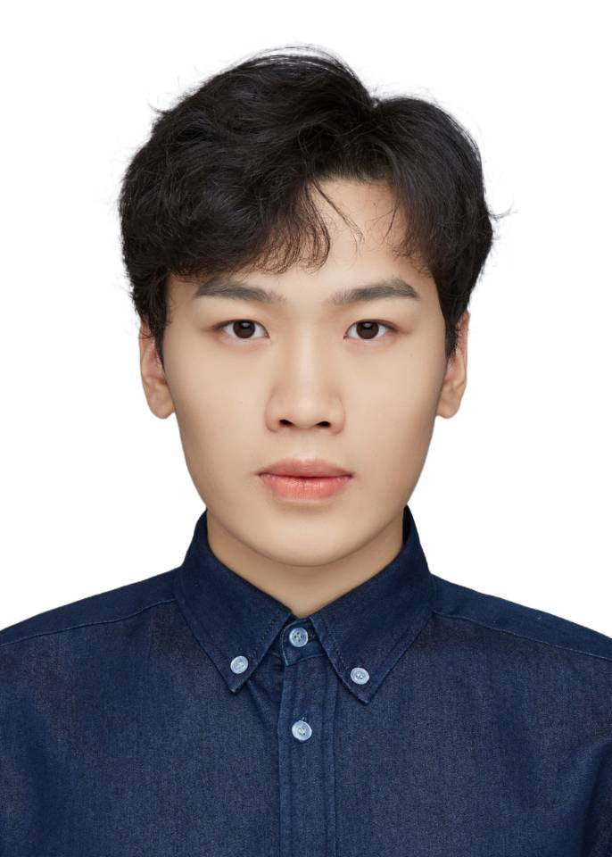

|
Zichen Wang
|
 |
Undergraduate,
School of Electrical Information Enigineering,
Southwest University
Email: zcwang [at] 163.com
|
Bio
I am an Undergradate in the School of Electrical Information Engineering (EIE) at Southwest University.
My research interests include reinforcement learning theory, bandits, reinforcement learning techniques and optimal adaptive control, algorithmic learning theory, information retrieval and machine learning in general.
Publications
Adversarial Attacks on Online Learning to Rank with Stochastic Click Models
Zichen Wang, Rishab Balasubramanian, Hui Yuan, Chenyu Song, Mengdi Wang, Huazheng Wang. submitted Neurips 2023.
Provably Efficient Reinforcement Learning for Online Adaptive Influence Maximization
Kaixuan Huang, Yu Wu, Xuezhou Zhang, Shenyinying Tu, Qingyun Wu, Mengdi Wang, Huazheng Wang. [arXiv]
Bandit Theory and Thompson Sampling-Guided Directed Evolution for Sequence Optimization
Hui Yuan, Chengzhuo Ni, Huazheng Wang, Xuezhou Zhang, Le Cong, Csaba Szepesvári, Mengdi Wang. NeurIPS 2022 [arXiv]
Communication Efficient Distributed Learning for Kernelized Contextual Bandits
Chuanhao Li, Huazheng Wang, Mengdi Wang, Hongning Wang. NeurIPS 2022 [arXiv]
Dynamic Global Sensitivity for Differentially Private Contextual Bandits
Honors and Awards
[11/2022], First Prize (Chongqing), China Undergraduate Mathematical Contest in Modelling.
[09/2022], Dean scholarship, Southwest university (2/57).
[09/2022], Second class academic scholarship, Southwest university (6/57).
[09/2021], Dean scholarship, Southwest university (2/57).
[09/2021], Second class academic scholarship, Southwest university (6/57).
|